or: four men, one terminal, zero boarding passes
it started, as most disasters do, with sylus.
"weekend trip," he said. "friday night."
no one asked where. no one asked why. everyone regretted it.
this is what happened next.
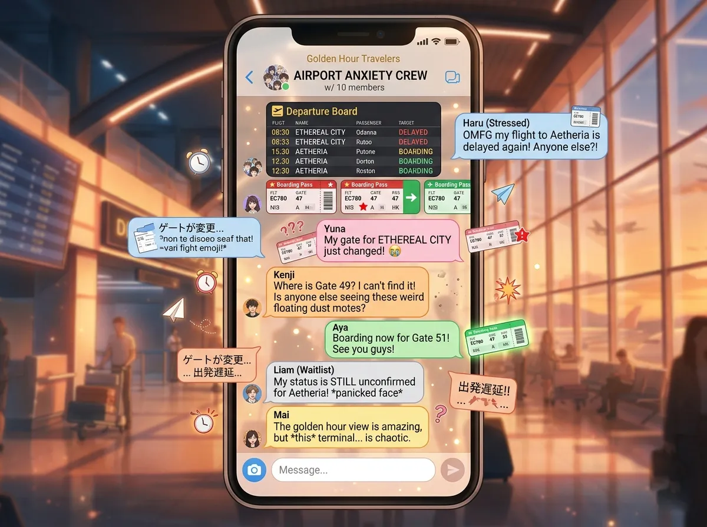
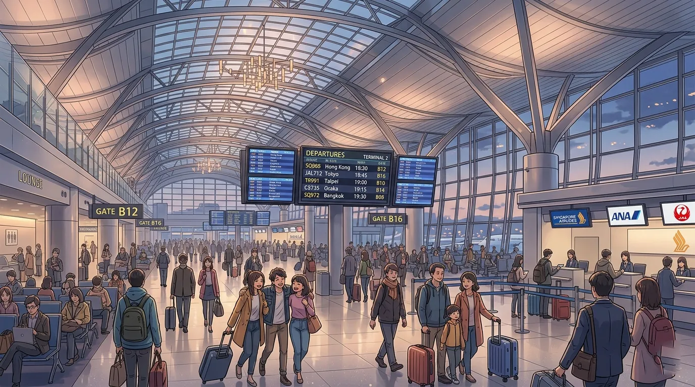
sylus arrived first. black car. black suitcase. black passport holder.
he stood at the departures drop-off. watching. like he was casing the building.
(he wasn't. probably.)
zayne arrived second. carrying a medical bag. (his carry-on.)
"that's not a suitcase," said sylus.
"it contains everything i need."
"it looks like you're going to surgery."
"i might need to."
"on the plane?"
"you never know."
rafayel arrived third. pulling a large suitcase. struggling.
"why is it so heavy," asked zayne.
"i brought options."
"for a weekend?"
"i'm an artist. i need variety."
xavier arrived fourth. forty minutes late. carrying nothing.
"where's your luggage," asked rafayel.
"i travel light."
"you're wearing the same clothes as yesterday."
"i travel very light."
"you forgot to pack."
"i prefer the term 'minimalist'."
sylus checked his watch. "we're behind schedule."
"we haven't even entered the building," said rafayel.
"exactly."
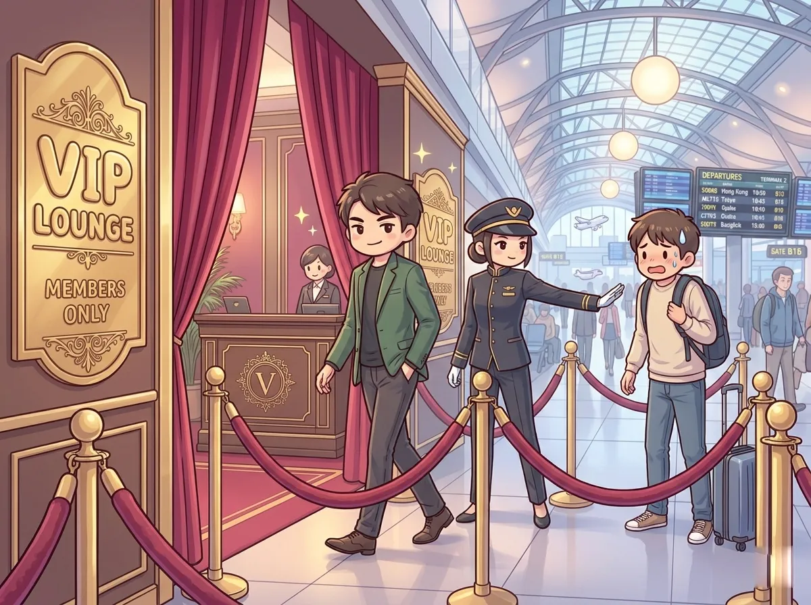
sylus walked toward the VIP lounge. confident. like he owned it.
the attendant stopped him. "sir, do you have a membership?"
"i'm sylus."
"i need to see your card."
"my name is the card."
the attendant blinked. "sir, i need—"
"call your manager."
the manager came. looked at sylus. looked at the attendant. "let him in."
"but sir, the policy—"
"let. him. in."
sylus walked through. didn't look back.
rafayel tried to follow. the attendant stopped him.
"sir, you're not on the list."
"i'm with him."
"he didn't mention you."
rafayel looked at sylus through the glass. sylus was already sitting down. drinking something.
"TRAITOR," shouted rafayel.
sylus raised his glass. didn't move.
zayne and xavier sat on regular chairs. in the regular terminal.
"this is fine," said zayne.
"the floor is comfortable," said xavier, who was already lying down.
"XAVIER, NOT ON THE FLOOR."
"the floor is the most honest surface."
rafayel sat down. defeated. "i hate airports."
"airports don't care," said zayne.
"that's the problem."
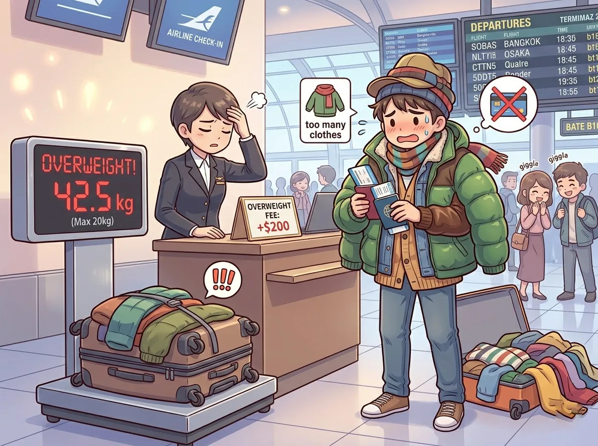
they met at the check-in counter. sylus had to leave the VIP lounge. (he wasn't happy.)
rafayel put his suitcase on the scale. the display lit up. 23.7 kg.
"the limit is 20 kg," said the agent.
"that's... close."
"it's over by almost 4 kg."
rafayel opened his suitcase. pulled out a jacket. put it on.
the scale: 22.1 kg.
rafayel pulled out another jacket. put it on.
the scale: 20.8 kg.
"i need to lose 800 grams."
rafayel pulled out a pair of shoes. put them on.
the scale: 20.3 kg.
"ALMOST."
he pulled out a scarf. wrapped it around his neck.
the scale: 19.9 kg.
"SUCCESS."
rafayel was now wearing three jackets, two pairs of shoes, and a scarf. it was summer.
zayne stared. "you look ridiculous."
"i look resourceful."
"you look like you're melting."
"fashion is pain."
sylus checked in. his suitcase was exactly 19.5 kg. perfect.
zayne checked in. his medical bag was 7 kg. (the rest was in his head.)
xavier had no luggage. "i'm efficient."
"you're going to wear the same shirt for three days," said rafayel.
"it's a good shirt."
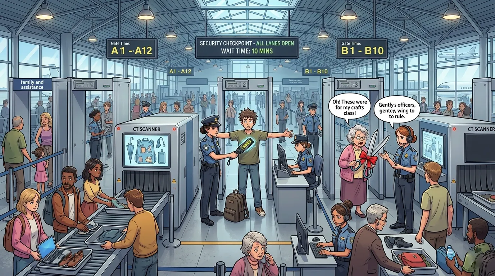
security. the great equalizer.
sylus walked through the metal detector. it beeped.
"sir, do you have any metal on you?"
"no."
the detector beeped again.
"sir, please step aside."
sylus stepped aside. the wand beeped near his pocket. he pulled out a metal card holder.
"that's... a lot of cards."
"i have many memberships."
the agent waved him through. (reluctantly.)
zayne put his medical bag on the belt. the x-ray lit up like a christmas tree.
"sir, what's in this bag?"
"medical supplies."
"these look like... scissors."
"surgical scissors."
"you can't bring scissors on a plane."
"they're medical-grade."
"that doesn't matter."
"i'm a doctor."
"doctors can't bring scissors either."
zayne argued for seven minutes. lost. surrendered the scissors. (he had three more pairs in his checked bag. he didn't mention them.)
rafayel walked through the detector. no beep. but his outfit attracted attention.
"sir, you're wearing three jackets. it's august."
"i run cold."
"you need to remove them."
rafayel removed three jackets. slowly. dramatically.
"sir, please."
"art cannot be rushed."
xavier walked through the detector. didn't beep. didn't stop. kept walking.
"sir, your bag—"
"i don't have a bag."
"your... phone?"
xavier turned around. walked back. put his phone in the bin. walked through again.
"thank you, sir."
xavier was already walking away. (he forgot to pick up his phone.)
"XAVIER, YOUR PHONE."
he came back. got his phone. walked away again.
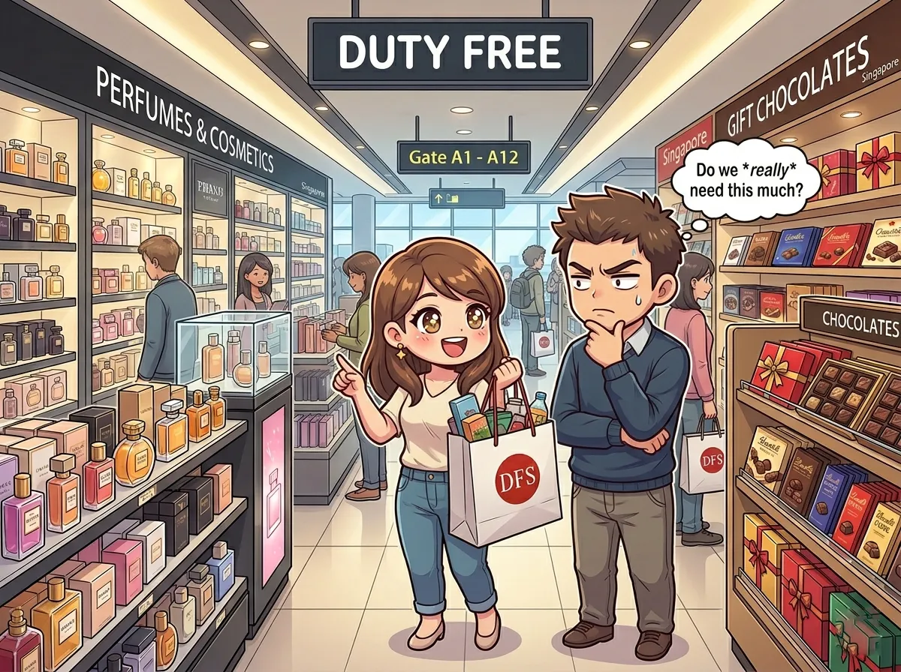
rafayel spotted the duty free shop. his eyes lit up.
"perfume. skincare. CHOCOLATE."
"we have a plane to catch," said zayne.
"we have TIME."
rafayel ran inside. emerged ten minutes later with a bag.
"what did you buy," asked sylus.
"necessities."
"that's a perfume box."
"smell is a necessity."
zayne walked in. emerged with hand sanitizer and a magazine about cardiology.
"that's not a vacation read," said rafayel.
"it's educational."
"it's the same thing you read at work."
"i like consistency."
xavier walked in. emerged with a bag of chips and a neck pillow.
"the chips are for now. the pillow is for later."
"you already have a pillow," said rafayel.
"this one is airport-themed."
sylus walked in. emerged with nothing.
"you didn't buy anything?" asked rafayel.
"i have everything i need."
"you're impossible."
"i know."
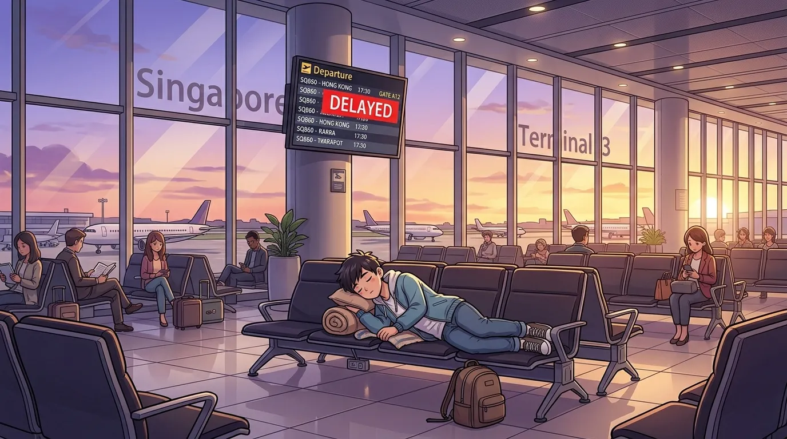
they reached the gate. B37. the screen said "ON TIME." (a lie.)
sylus sat down. back straight. watching the door.
zayne sat next to him. reading his cardiology magazine.
rafayel paced. "why isn't it boarding yet."
"boarding starts in 45 minutes," said zayne.
"that's FOREVER."
"it's 45 minutes."
"in airport time, that's three hours."
xavier found a row of empty chairs. lay down across three of them.
"xavier, no," said rafayel.
"xavier, yes."
he closed his eyes.
"we're going to miss the flight because of you."
"i'll hear the announcement."
"you won't."
"i will."
he was asleep in thirty seconds.
an hour passed. the screen changed. "DELAYED. 45 MINUTES."
rafayel groaned. "I KNEW IT."
"airports have delays," said zayne. "it's normal."
"normal doesn't make it less painful."
another hour passed. the screen changed again. "DELAYED. GATE CHANGE. C12."
"WE HAVE TO MOVE GATES," shouted rafayel.
"walking is good for you," said sylus.
"WALKING IS NOT GOOD FOR MY SOUL."
they walked to C12. xavier didn't wake up.
"we have to carry him," said rafayel.
"no," said sylus.
"we can't leave him."
"watch me."
sylus walked away. rafayel stared. "he's serious."
zayne sighed. picked up xavier's feet. rafayel picked up his shoulders.
they carried him across the terminal. xavier didn't wake up.
"how is he still asleep," panted rafayel.
"i told you. he's trained."
they reached C12. put xavier on three new chairs. he didn't move.
sylus was already there. drinking coffee. watching.
"you didn't help," said rafayel.
"i supervised."
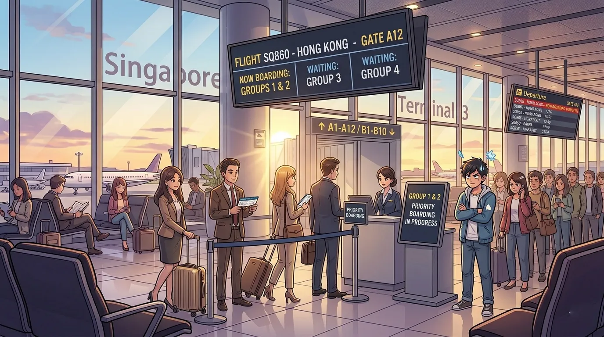
the announcement came. "now boarding group 1."
sylus stood up.
"you're group 1?" asked rafayel.
"i upgraded."
"when"
"just now."
sylus walked to the front of the line. scanned his boarding pass. walked onto the jet bridge.
didn't look back.
"TRAITOR," shouted rafayel.
"now boarding group 2."
zayne stood up. "i'm group 2."
"YOU TOO"
"i planned ahead."
zayne walked to the gate. scanned his pass. followed sylus.
"now boarding group 3."
rafayel checked his boarding pass. group 4.
"i'm group 4. I'M GROUP 4."
"that's fine," said xavier, who had finally woken up.
"IT'S NOT FINE."
"group 4 means we get on after everyone else."
"I KNOW WHAT IT MEANS."
"then why are you shouting."
"BECAUSE I'M EMOTIONAL."
group 4 was called. rafayel ran to the gate. xavier walked. slowly.
they scanned their passes. walked onto the plane.
sylus was already in first class. drinking something. (again.)
zayne was in premium economy. reading his magazine.
rafayel and xavier were in the last row. by the bathroom.
"this is the worst seat on the plane," said rafayel.
"the seats are the same," said xavier.
"it SMELLS."
"that's character."
"IT'S NOT CHARACTER. IT'S AMMONIA."
xavier closed his eyes. "wake me when we land."
"WE HAVEN'T TAKEN OFF."
"pre-takeoff nap. it's efficient."
xavier was asleep before the plane pushed back.
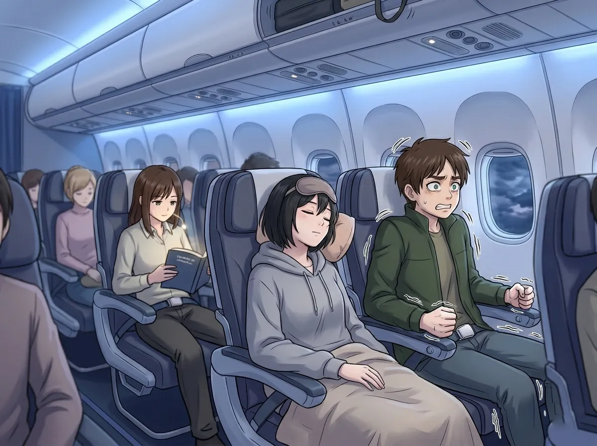
the plane took off. rafayel gripped his armrests. knuckles white.
"are you afraid of flying?" asked xavier, eyes still closed.
"NO."
"you're gripping the armrest."
"i'm... appreciating the engineering."
the plane hit turbulence. rafayel yelped.
xavier opened one eye. "you yelped."
"i did not."
"you did."
"it was a... artistic vocalization."
xavier closed his eye. went back to sleep.
up front, sylus was calm. reading something on his phone. turbulence didn't affect him.
(nothing affected him. it was infuriating.)
zayne was taking notes. on what? no one knew. probably medical.
the flight attendant came by with snacks. xavier's eyes opened instantly.
"pretzels," he said.
"yes, sir."
"i'll take three."
"sir, you can only take one."
xavier stared. "one is not enough."
"it's policy."
rafayel handed xavier his pretzels. "take mine. i'm not hungry."
xavier took them. "you're a good friend."
"i know."
the flight continued. uneventfully. (thankfully.)
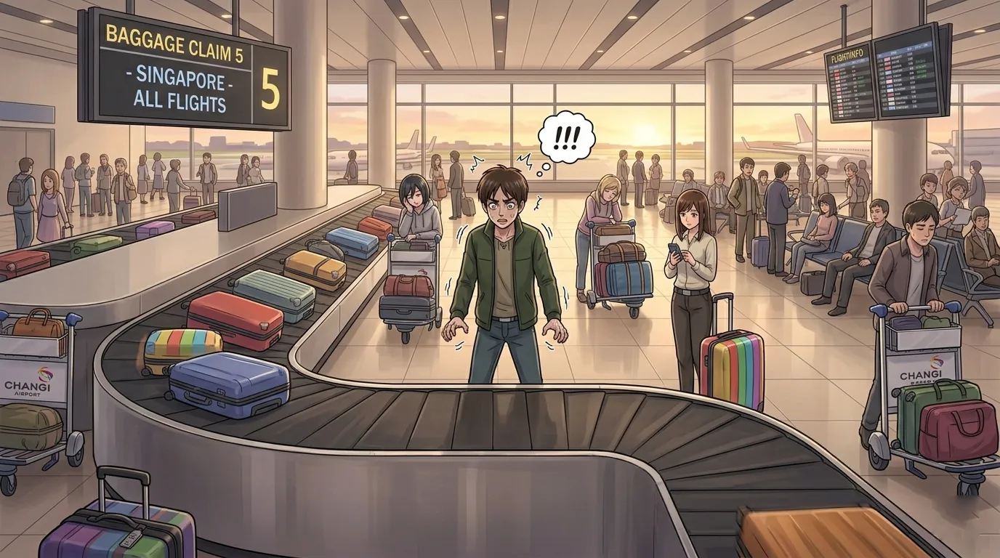
they landed. deplaned. walked to baggage claim.
the carousel started. bags came out. one by one.
sylus's bag came out first. (of course.)
zayne's medical bag came out second.
rafayel waited. and waited. and waited.
"where is my bag."
"it's coming," said zayne.
the carousel stopped.
rafayel stared. "WHERE IS MY BAG."
he went to the baggage office. the agent looked at his tag. typed something.
"sir, your bag is in... another city."
"WHAT."
"it was misrouted. it will arrive tomorrow."
"TOMORROW"
"we can deliver it to your hotel."
rafayel walked back. empty-handed. shell-shocked.
"my bag is gone."
"it's not gone. it's just... elsewhere," said zayne.
"my clothes. my skincare. MY SNACKS."
"you're wearing three jackets. you'll be fine."
"THIS IS NOT FINE."
xavier patted his shoulder. "you can borrow my shirt."
"you have one shirt."
"it's a good shirt."
sylus watched. didn't say anything. (he was enjoying this.)
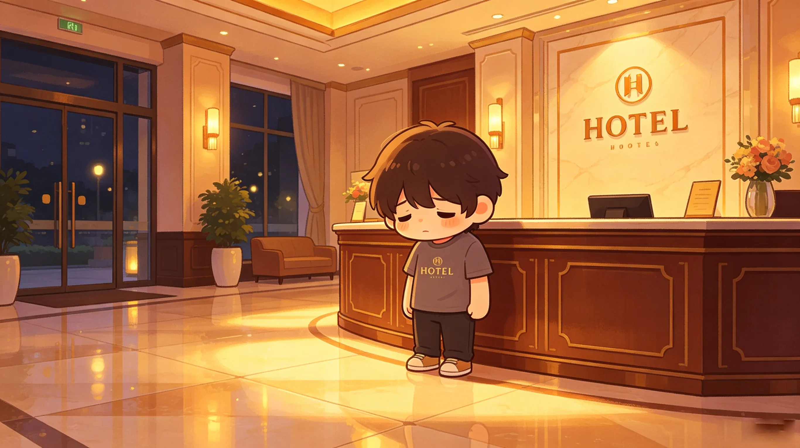
the hotel was nice. too nice for people who'd just lost a bag.
sylus checked in. four rooms. (he'd booked them weeks ago.)
"i need a toothbrush," said rafayel. "and toothpaste. and pajamas. and—"
"the gift shop is over there," said the front desk agent.
rafayel went to the gift shop. bought everything. spent too much.
"this hotel-branded t-shirt is 80 dollars," he said.
"it's organic cotton," said the cashier.
"i don't care. i have no other options."
zayne went to his room. unpacked his medical bag. (it was mostly medical supplies. he did have one extra shirt. he didn't offer it.)
xavier went to his room. lay on the bed. fell asleep immediately.
sylus went to his room. stood by the window. looked at the city.
his phone buzzed. group chat.
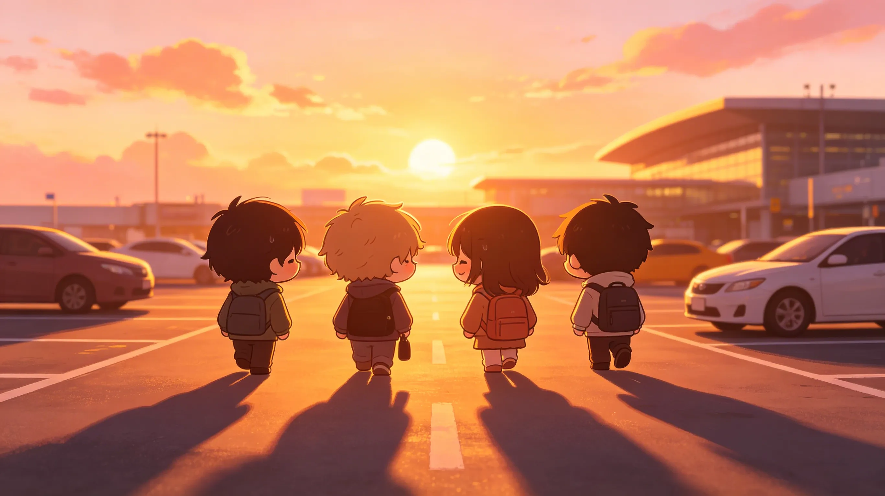
the trip ended. (finally.) they flew back.
this time, rafayel carried his bag on. (he learned nothing.)
zayne hid his scissors better. (he learned everything.)
xavier slept through both flights. (he learned nothing. he didn't need to.)
sylus was first off the plane. (as always.)
in the parking lot, rafayel looked back at the terminal.
"i hate airports," he said.
"airports don't hate you," said zayne. "they're indifferent."
"that's worse."
"i know."
"same time next month?" asked rafayel.
"no," said sylus.
"same time next year?"
"maybe."
"that's not a no."
"it's not a yes either."
rafayel smiled. "i'll take it."
xavier was already asleep in the car. (again.)
they drove home. the airport grew small in the rearview mirror.
somewhere, rafayel's suitcase was still in another city.
it arrived three days later. he didn't need any of it.